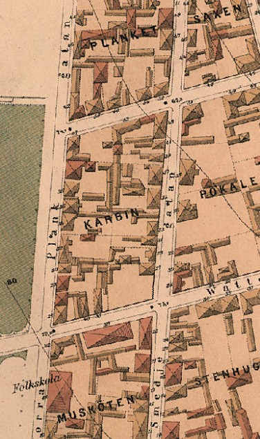

Gård 10
Gård 10, Kv Karbinen, Nordantill, Norrköping, Norrköpings Matteus (E)

Kvarteret Karbin i Nordantill 1879
Fixat k
Fakta:
Latitud, Longitud
58°35'31.00", 16°10'26.39"
58.59194, 16.17399
Position
RT90: 6496642, 1521448
SWEREF: 6495213, 568243
Länkar:
Google Earth
Personregister
Efternamnsregister
Ortsregister
Framställd 12 aug 2026 med hjälp av
Disgen
version 2025.